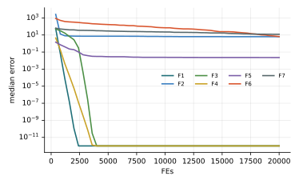

Chương 9 · Trí tuệ bầy đànChapter 9 · Swarm Intelligence
Tối ưu bầy sói xámGrey Wolf OptimizerGrey Wolf Optimizer — GWOGWO — hunting as a pack led by three wolves
Châu Văn Vân · PTITHCM
Mục tiêu bài họcLearning objectives
Sau chương này, bạn có thểAfter this chapter you will be able to
- Mô tả thứ bậc α, β, δ, ω và ba giai đoạn săn mồi.Describe the α, β, δ, ω hierarchy and the three hunting phases.
- Viết công thức vây bắt với A và C.Write the encircling equations with A and C.
- Giải thích cập nhật vị trí theo trung bình ba con dẫn đầu.Explain the position update as the mean of three leaders.
- Nhận diện điểm yếu: hội tụ sớm và thiên lệch gốc tọa độ.Recognize the weak spots: premature convergence and origin bias.
Tổng quanOverview
Một đàn sói có thứ bậc rõ ràngA wolf pack with a strict pecking order
- Do Mirjalili, Mirjalili và Lewis đề xuất năm 2014.Proposed by Mirjalili, Mirjalili and Lewis in 2014.
- Sói xám sống thành đàn khoảng 5 – 12 con, phân cấp nghiêm ngặt từ con đầu đàn xuống con thấp nhất.Grey wolves live in packs of about 5 – 12, with a strict hierarchy from the leader down.
- Cuộc săn có ba giai đoạn: lần theo con mồi, vây quanh để quấy rối, rồi tấn công.A hunt has three phases: track the prey, encircle and harass it, then attack.
- GWO mô phỏng cả thứ bậc lẫn cách săn để tìm lời giải tối ưu.GWO models both the hierarchy and the hunt to search for an optimum.
Ý tưởng cốt lõiCore idea
Không ai biết chính xác con mồi ở đâu. Nhưng ba con sói giỏi nhất đoán tốt hơn cả, nên mỗi con còn lại di chuyển về trung bình ba lời đoán đó.Nobody knows exactly where the prey is. But the three best wolves guess better than the rest, so every other wolf moves toward the average of those three guesses.
Những con còn lại là ω (omega): chúng không dẫn dắt, chỉ đi theo α, β, δ.All other wolves are ω (omega): they do not lead, they follow α, β and δ.
Mô hình toán họcMathematical model
Vây bắt: tiến lại gần con mồi một khoảng ngẫu nhiênEncircling: close in on the prey by a random amount
- Xp: vị trí con mồi; : prey position; X: vị trí con sói.: wolf position.
- r1, r2 ~ U(0, 1), rút lại cho từng chiều., redrawn for every dimension.
- a giảm tuyến tính từ 2 về 0 theo số vòng lặp, nên decreases linearly from 2 to 0 over the iterations, so A ∈ [−a, a] co dần. shrinks.
- C ∈ [0, 2] phóng to hoặc thu nhỏ ảnh hưởng của con mồi, mô phỏng chướng ngại vật trên đường săn. randomly amplifies or damps the prey's influence, mimicking obstacles on the way.
Mô hình toán họcMathematical model
Săn mồi: lấy trung bình ba lời đoánHunting: average three guesses
Vị trí con mồi không biết trước, nên GWO dùng α, β, δ làm ba ước lượng của nó:The prey's position is unknown, so GWO uses α, β and δ as three estimates of it:
Khám phá và khai thácExploration vs exploitation
Tham số a quyết định đàn đang tản ra hay khép lạiThe parameter a decides whether the pack spreads out or closes in
- |A| > 1: sói bị đẩy ra xa con mồi, đi tìm vùng mới. Đây là pha khám phá.|A| > 1: wolves are pushed away from the prey to look elsewhere. This is exploration.
- |A| < 1: sói lao vào con mồi. Đây là pha khai thác.|A| < 1: wolves charge the prey. This is exploitation.
- Nửa đầu quá trình còn có cơ hội tản ra; nửa sau gần như chỉ khép vòng vây. Riêng C vẫn ngẫu nhiên đến cuối, giữ lại chút đa dạng.In the first half wolves can still spread out; in the second half they mostly tighten the circle. Only C stays random to the end, keeping some diversity.
Các bướcSteps
Các bước của GWOGWO step by step
Mirjalili, Mirjalili & Lewis (2014); a giảm tuyến tính 2 → 0.Mirjalili, Mirjalili & Lewis (2014); a decreases linearly 2 → 0.
- Khởi tạo n sói; chọn α, β, δ là ba sói tốt nhất.Initialize n wolves; pick α, β, δ as the three best.
- Tính a = 2 − 2t/T; với mỗi sói tạo A = 2ar1 − a, C = 2r2.Compute a = 2 − 2t/T; for each wolf draw A = 2ar1 − a, C = 2r2.
- Tính X1, X2, X3 theo α, β, δ.Compute X1, X2, X3 from α, β, δ.
- Vị trí mới X = (X1 + X2 + X3)/3; đánh giá.New position X = (X1 + X2 + X3)/3; evaluate.
- Cập nhật α, β, δ; lặp đến hết ngân sách.Update α, β, δ; repeat until the budget is spent.
2 – 5 vòng lặp chínhmain loop
Thuật toánAlgorithm
Lưu đồFlowchart
Tham sốParameters
Tham số của GWOGWO parameters
| Tham sốParameter | Ý nghĩaMeaning | Giá trị thường dùngTypical value |
|---|---|---|
| a | Điều khiển khám phá/khai thácControls exploration/exploitation | 2 → 0 tuyến tính |
| A | |A| > 1 khám phá, |A| < 1 khai thác|A| > 1 explore, |A| < 1 exploit | 2ar1 − a |
| C | Trọng số ngẫu nhiên cho con mồiRandom weight on the prey | 2r2 ∈ [0, 2] |
GWO không có tham số cần chỉnh ngoài n và T.GWO has no parameters to tune besides n and T.
Thuật toán GWOThe GWO algorithm
Mã giảPseudocode
Chỉ có hai tham số người dùng phải chọn: số con sói n và số vòng lặp T.Only two settings are left to the user: the number of wolves n and the number of iterations T.
- Khởi tạo ngẫu nhiên n con sói XiRandomly initialize n wolves Xi
- Đánh giá; chọn Xα, Xβ, Xδ là ba con tốt nhấtEvaluate; pick the three best as Xα, Xβ, Xδ
- for t = 1 … T
- a = 2 − 2t / T
- for mỗi con sóieach wolf i
- Tính X1, X2, X3 theo α, β, δCompute X1, X2, X3 from α, β, δ
- Xi ← (X1 + X2 + X3) / 3, kẹp trong miền tìm kiếm, clamped to the bounds
- Đánh giá lại, cập nhật α, β, δRe-evaluate, update α, β, δ
- return Xα
Mô phỏngSimulation
12 con sói trên một địa hình nhiều hố12 wolves on a landscape with several basins
Bài toán cực tiểu: vùng càng đậm càng tốt. Dấu + trắng là cực tiểu toàn cục; bốn hố nhạt hơn là cực tiểu cục bộ.A minimization problem: darker is better. The white + marks the global minimum; the four lighter basins are local minima.
Để ý: lúc đầu đàn còn tản rộng, về sau a nhỏ dần và cả đàn khép quanh α.Watch how the pack starts wide, then tightens around α as a shrinks.
Thực nghiệm · GWOExperiment · GWO
Kết quả trên bộ 7 hàm, D = 10, 30 lần chạyResults on the 7-function suite, D = 10, 30 runs
| HàmFunction | Trung bìnhMean | Độ lệchStd | Trung vịMedian | so PSOvs PSO |
|---|---|---|---|---|
| F1 · Sphere | 0 | 0 | 0 | ≈ |
| F2 · Rosenbrock | 6.59e+0 | 6.65e−1 | 6.29e+0 | − |
| F3 · Rastrigin | 0 | 0 | 0 | + |
| F4 · Ackley | 0 | 0 | 0 | + |
| F5 · Griewank | 3.25e−2 | 3.03e−2 | 2.28e−2 | + |
| F6 · Shifted Sphere | 4.34e+1 | 1.15e+2 | 6.55e+0 | − |
| F7 · Shifted Rastrigin | 1.31e+1 | 5.18e+0 | 1.20e+1 | − |
- Sai số f(xbest) − f* sau 20 000 lần đánh giá; n = 30; tham số mặc định của bài gốc; giá trị < 10−8 ghi là 0.Error f(xbest) − f* after 20,000 evaluations; n = 30; default parameters of the original paper; values < 10−8 shown as 0.
- Cột cuối: Wilcoxon rank-sum với PSO (α = 0.05): + tốt hơn, − kém hơn, ≈ không khác biệt.Last column: Wilcoxon rank-sum vs PSO (α = 0.05): + better, − worse, ≈ no difference.
- Xếp hạng Friedman trung bình: 7.00, đứng thứ 6/18 trong 18 thuật toán của giáo trình.Average Friedman rank: 7.00, position 6/18 among the textbook’s 18 algorithms.
- Thiên lệch gốc tọa độ: trung vị F1 = 0 nhưng F6 (cùng hàm, dịch tâm) = 6.55e+0. Kết quả tốt trên F1 phần lớn do tối ưu nằm tại 0.Origin bias: median F1 = 0 but F6 (same function, shifted) = 6.55e+0. The good F1 result is largely due to the optimum lying at 0.
Thực nghiệm · GWOExperiment · GWO
Đường hội tụ (trung vị 30 lần chạy)Convergence (median of 30 runs)

Mã nguồnSource code
Mã nguồn PythonPython source code
Đoạn trích phần cập nhật chính; tệp đầy đủ có chú thích và tham số mặc định theo bài gốc.Excerpt of the main update; the full file documents the default parameters of the original paper. code/si/algorithms/gwo.py
while not prob.done: t += 1 a = 2 - 2 * t / T acc = np.zeros_like(X) for k in range(3): A = 2 * a * rng.random(X.shape) - a C = 2 * rng.random(X.shape) acc += lead[k] - A * np.abs(C * lead[k] - X) X = prob.clip(acc / 3) rank(X, prob(X)) return prob.best_x, prob.best_f
Chạy lại toàn bộ thực nghiệm: python -m experiments.run_continuous trong thư mục code/ (xem PROTOCOL.md).Reproduce all experiments: python -m experiments.run_continuous inside code/ (see PROTOCOL.md).
Biến thể và ứng dụngVariants and applications
Một thuật toán gọn, nên được mở rộng rất nhiềuA compact algorithm, extended in many directions
Binary GWO
Chuyển vị trí liên tục thành bit qua hàm sigmoid, dùng cho bài toán chọn đặc trưng.Maps continuous positions to bits through a sigmoid, used for feature selection.
MOGWO
Phiên bản đa mục tiêu, giữ một kho lưu trữ các lời giải Pareto.Multi-objective version that keeps an archive of Pareto solutions.
Lịch giảm a khácOther schedules for a
Thay đường giảm tuyến tính bằng đường phi tuyến để cân bằng lại khám phá và khai thác.Replace the linear decay with a nonlinear curve to rebalance exploration and exploitation.
Ứng dụngApplications
Thiết kế kỹ thuật, điều độ hệ thống điện, huấn luyện mạng nơ-ron, chọn đặc trưng.Engineering design, power dispatch, neural network training, feature selection.
Đánh giáAssessment
Dễ dùng, nhưng cần biết điểm yếuEasy to use, but know its weak spots
Điểm mạnhStrengths
- Rất ít tham số, cài đặt chỉ vài chục dòng.Very few parameters; a few dozen lines to implement.
- Ba con dẫn đầu chia sẻ thông tin, ít phụ thuộc vào một điểm duy nhất.Three leaders share information, so the search depends less on a single point.
- Hội tụ nhanh trên nhiều hàm thử nghiệm đơn mốt.Converges quickly on many unimodal benchmarks.
Hạn chếLimitations
- Dễ hội tụ sớm trên hàm nhiều cực trị, vì cả đàn cùng bám α, β, δ.Prone to premature convergence on multimodal functions, since the whole pack follows α, β, δ.
- Có xu hướng kéo về gốc tọa độ; kết quả trên hàm có tối ưu tại 0 có thể bị đánh giá quá cao (Niu và cs., 2019).Biased toward the origin, which can inflate results on functions whose optimum is at 0 (Niu et al., 2019).
- Lịch giảm a cố định không thích nghi theo bài toán.The fixed schedule for a does not adapt to the problem.
Ví dụ tính tay · hàm f = (x1 − 5)² + (x2 − 2)²Worked example · f = (x1 − 5)² + (x2 − 2)²
Một bước GWO cho con sói 1 tại (6.16, 4.41), a = 1.333One GWO step for wolf 1 at (6.16, 4.41), a = 1.333
| Vị tríPosition | A = 2a·r1 − a | C = 2r2 | D = |C·Xlead − X| | Xk = Xlead − A·D | |
|---|---|---|---|---|---|
| α | (4.73, 3.30) | (−0.800, 0.267) | (1.0, 1.0) | (1.430, 1.110) | (5.874, 3.004) |
| β | (4.81, 3.49) | (−0.267, 0.800) | (0.6, 1.8) | (3.274, 1.872) | (5.683, 1.992) |
| δ | (5.94, 3.44) | (0.533, −0.533) | (1.2, 0.4) | (0.968, 3.034) | (5.424, 5.058) |
- 12 con sói ban đầu như trong sách; ba con tốt nhất là sói 10, 11, 12 với f = 1.763, 2.256, 2.957.12 initial wolves as in the book; the three best are wolves 10, 11, 12 with f = 1.763, 2.256, 2.957.
- Chọn r1 = (0.2, 0.6), (0.4, 0.8), (0.7, 0.3) và r2 = (0.5, 0.5), (0.3, 0.9), (0.6, 0.2) cho α, β, δ để ai cũng tính lại được.Fix r1 = (0.2, 0.6), (0.4, 0.8), (0.7, 0.3) and r2 = (0.5, 0.5), (0.3, 0.9), (0.6, 0.2) for α, β, δ so anyone can recompute.
- Vị trí mới (X1 + X2 + X3)/3 = (5.660, 3.352): f giảm từ 7.154 xuống 2.263. Cực tiểu ở (5, 2).New position (X1 + X2 + X3)/3 = (5.660, 3.352): f drops from 7.154 to 2.263. The minimum is at (5, 2).
Đối chiếu sách: sách không cho giá trị r1, r2 nên không thể kiểm lại vị trí (4.04, 2.60); dấu |·| bị đặt bao cả biểu thức Xk, và vị trí con đầu đàn chép không khớp (4.73 so với 4.7372).Checked against the book: it gives no r1, r2, so its position (4.04, 2.60) cannot be verified; the |·| wraps the whole Xk expression, and the leader positions are copied inconsistently (4.73 vs 4.7372).
Bài tập và thực hànhExercises and labs
Luyện tập: tính tay rồi lập trìnhPractice: by hand, then in code
Bài tập lý thuyếtTheory exercises
- Một chiều: Xα = 2, X = 0, a = 1, r1 = 0.75, r2 = 0.5. Tính A, C, Dα, X1.One dimension: Xα = 2, X = 0, a = 1, r1 = 0.75, r2 = 0.5. Compute A, C, Dα, X1.
- Nếu giữ a = 2 suốt quá trình thì sao? Nếu a = 0?What if a = 2 throughout? And a = 0?
- Đề xuất một thí nghiệm để phát hiện thiên lệch gốc tọa độ.Design an experiment that reveals origin bias.
Thực hành Python / MATLABPython / MATLAB labs
- Cài GWO; chạy trên Sphere chuẩn và Sphere dịch tâm, so sánh kết quả.Implement GWO; run it on the standard and on a shifted Sphere, compare.
- Thử lịch giảm a phi tuyến và đo ảnh hưởng.Try a nonlinear schedule for a and measure the effect.
- Cài Binary GWO cho chọn đặc trưng trên một bộ dữ liệu UCI.Implement Binary GWO for feature selection on a UCI dataset.
Tài liệu tham khảoReferences
Đọc thêm: các bài báo gốcFurther reading: the original papers
- S. Mirjalili, S. M. Mirjalili, and A. Lewis, “Grey Wolf Optimizer,” Advances in Engineering Software, vol. 69, pp. 46–61, 2014, doi: 10.1016/j.advengsoft.2013.12.007.
- S. Mirjalili, S. Saremi, S. M. Mirjalili, and L. d. S. Coelho, “Multi-objective grey wolf optimizer: A novel algorithm for multi-criterion optimization,” Expert Systems with Applications, vol. 47, pp. 106–119, 2016, doi: 10.1016/j.eswa.2015.10.039.
- E. Emary, H. M. Zawbaa, and A. E. Hassanien, “Binary grey wolf optimization approaches for feature selection,” Neurocomputing, vol. 172, pp. 371–381, 2016, doi: 10.1016/j.neucom.2015.06.083.
- P. Niu, S. Niu, N. liu, and L. Chang, “The defect of the Grey Wolf optimization algorithm and its verification method,” Knowledge-Based Systems, vol. 171, pp. 37–43, 2019, doi: 10.1016/j.knosys.2019.01.018.
- M. O. Okwu and L. K. Tartibu, Metaheuristic Optimization: Nature-Inspired Algorithms Swarm and Computational Intelligence, Theory and Applications. Springer International Publishing, 2021, doi: 10.1007/978-3-030-61111-8.
Tóm lạiIn short
Cảm ơn các bạn đã theo dõiThank you for your attention
Châu Văn Vân · PTITHCM · Tài liệu gốc: Mirjalili và cs., Advances in Engineering Software 69, 2014Original paper: Mirjalili et al., Advances in Engineering Software 69, 2014